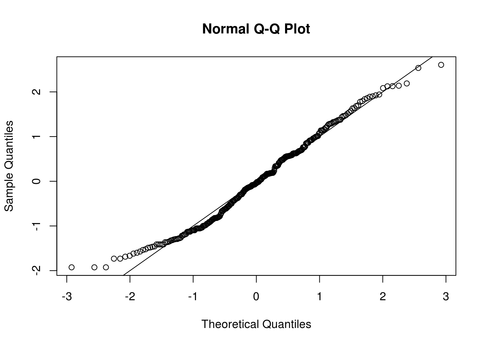
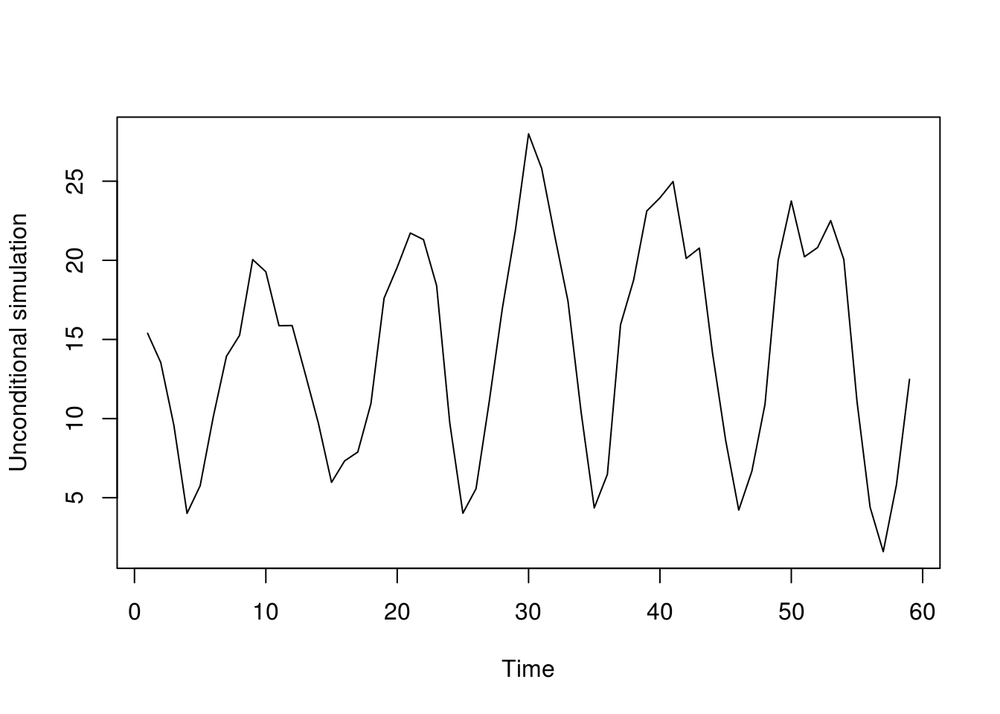

3.2 Boostrap methods for time series
The boostrap is a computer-intensive resampling-based methodology that arises as alternative to asymptotic theory.
The idea of the bootstrap is to approximate the data generating process. Suppose our time series \(\boldsymbol{Y}=\{Y_1, \ldots, Y_T\}\) is generated by some model \(\mathrm{DGP}\). We approximate the latter by an estimate \(\widehat{\mathrm{DGP}}\) and use this model to simulate new replicate series \(\boldsymbol{Y}^*=\{Y_1^* , \ldots , Y_n^*\}\) . We can then reproduce the estimation of the quantity of interest, say \(\widehat{\boldsymbol{\theta}}\), by repeating the estimation procedure over the (new) simulated datasets. The relationship between the test statistic and the population value \(\widehat{\boldsymbol{\theta}}-\boldsymbol{\theta}\) should be also closely approximated by the bootstrap replicates \(\widehat{\boldsymbol{\theta}}{}^*-\boldsymbol{\theta}^*\), so it is paramount that the latter reproduce the features under study.
To recap: rather than relying on the asymptotic distribution of the test statistics, one simulates artificial datasets under the postulated model and calculate the test statistic on each replicate dataset. For testing, this model should correspond to sampling under the null hypothesis. We use the empirical distribution of the so-called \(B\) bootstrap replicates as distribution for the test statistic to calculate standard errors, confidence intervals, critical values or \(P\)-values.
We illustrate the use of the boostrap on a simple example from linear models, than detail its use in time series.
3.2.1 Bootstrapping a linear model
Consider a simple linear model with independent and identically distributed errors, \[\boldsymbol{Y} = \mathbf{X}\boldsymbol{\beta}+\boldsymbol{\varepsilon}\] where \(\boldsymbol{\varepsilon} \stackrel{\mathrm{iid}}{\sim} F(\boldsymbol{0}, \sigma^2\mathbf{I}_n)\) and the first column of the \(n \times k\) matrix of regressors \(\mathbf{X}\) is \(\boldsymbol{1}_n\). The parameter estimated obtained by ordinary least squares are such that the fitted values are orthogonal to the estimated errors, meaning \(\mathbf{X}\hat{\boldsymbol{\beta}} \perp \hat{\boldsymbol{\varepsilon}}\) by construction, and that \(\overline{\hat{\boldsymbol{\varepsilon}}} = 0\) provided we include \(\boldsymbol{1}_n\) as a regressor.
Suppose for simplicity that the linear model takes the form \(y_i=\alpha+\beta x_i + \varepsilon_i\), where \(\varepsilon_i \stackrel{\mathrm{iid}}{\sim}F(0,\sigma^2)\) and that we want to test the null hypothesis \(\mathsf{H}_0: \beta=0\).
The simplest bootstrap scheme is the nonparametric bootstrap, due to Efron (1976). It goes as follows: the bootstrap data generating process consists in resampling residuals (with replacement) from \(\tilde{F}\), the empirical distribution of the errors.
- Fit the model \(\boldsymbol{y}=\widehat{\alpha} + \widehat{\beta}\boldsymbol{x} + \widehat{\boldsymbol{\varepsilon}}\); the Wald test statistic takes the form \(T=\hat{\beta}/\mathrm{se}(\hat{\beta})\).
- Estimate the model postulated under \(\mathsf{H}_0\) and obtain residuals \(\widetilde{\boldsymbol{\varepsilon}}=\boldsymbol{y}-\widetilde{\alpha}\).
- Create bootstrap series \(\boldsymbol{y}_b^* = \widetilde{\alpha}\boldsymbol{1}_n + \boldsymbol{\varepsilon}_b^*\) for \(b=1, \ldots, B\), where \(\varepsilon_{i_b}^*\) are resampled with replacement from the empirical distribution \(\{\widetilde{\varepsilon}\}_{i=1}^n\) with probability \(1/n\).
- Obtain bootstrap test statistics by fitting \(\boldsymbol{y}_b^*=\widehat{\alpha}_{b}^* + \widehat{\beta}_{b}\boldsymbol{x} + \widehat{\boldsymbol{\varepsilon}}_b^*\) and obtain \(T_b=\hat{\beta}_b/\mathrm{se}(\hat{\beta}_b)\)
- The \(P\)-value for \(T\) will be the rescaled rank \[\frac{1}{B}\sum_{b=1}^B \mathrm{I}(T_b>T)\] for a one sided test, otherwise we use the rank of the absolute values, \(\sum_{b=1}^B \mathrm{I}(|T_b|>|T|)\) for a two-sided test.
Nothing prevents one to take \(T=\hat{\beta}\) as test statistic in the above. It is however best to bootstrap a pivotal quantity should the latter be available. Indeed, if the test statistic of interest is pivotal under the null hypothesis, then the bootstrap is a Monte-Carlo test and the latter is exact at level \(\alpha\) if \(\alpha(B+1)\) is integer.
The parametric bootstrap for the linear regression would specify a model for the generic distribution \(F\), for example Normal. One construct bootstrap series as before, this time replacing the sampling in Step 3. with \(\boldsymbol{\varepsilon}^*_b \sim \mathcal{N}_n(\boldsymbol{0}_n, \widehat{\sigma}^2\mathbf{I}_n)\), where the estimator \(\widehat{\sigma}^2\) of the model fitted under \(\mathsf{H}_0\) should be the unbiased estimator of the variance, whose denominator is \(n-k-1\) rather than \(n\).
Many test statistics can be cast as regression problems. We have seen that conditional maximum likelihood estimates for AR(\(p\)) models coincide with least square estimates from the regression \(y_t=\mu+\boldsymbol{\phi}^\top(y_{t-1}, \ldots, y_{t-p})^\top\) for \(t=p, \ldots, n\) because of the Markov structure.
3.2.2 Testing for heteroscedasticity
Consider a GARCH(1,1) model \(y_t=\mu + v_t, v_t = \sigma_t\varepsilon_t, \varepsilon_t \stackrel{\mathrm{iid}}{\sim}F(0,\sigma^2)\) and \[\sigma^2_t = \alpha_0 + \alpha_1 v_{t-1}^2 + \beta \sigma^2_{t-1}\] and suppose that we wish to test the null hypothesis that the \(v_t \stackrel{\mathrm{iid}}{\sim}F(0,\sigma^2)\). The easiest way to test this would be to run the regression \(\widehat{v}_t^2 = b_0 + b_1 \widehat{v}_{t-1}^2 + \eta_t\), where \(\widehat{v}_t\) are residuals from a linear model \(y_t=\mu +v_t\). The null hypothesis that \(\alpha_1=\beta=0=0\) is equivalent to testing \(b_1=0\), and the ordinary \(t\) statistic could be used and we are back in the framework just presented.
Bootstrap replicates must reproduce the postulated model. This is complicated for time series, because of the serial dependence and the potential heteroscedasticity. If we resample residuals without taking into account the time dependence, our replicates won’t be anymore time series!
3.2.3 AR-sieve bootstrap
Approximating a stationary time series by an AR(\(p\)) leads to a parametric bootstrap termed “sieve” bootstrap, after Grenander (1981). Under what kind of assumptions can AR models reproduce features of the underlying stochastic process? By the Wold-decomposition, any purely stochastic mean-zero stationary process with a positive and continuous spectral density can be written as \[Y_t= \sum_{j=1}^\infty \phi_j Y_{t-j} + \varepsilon_t.\] for uncorrelated white noise sequence \(\varepsilon_t\). Another possible (stronger) assumption is to assume that the process \(Y_t\) admits an AR(\(\infty\)) representation, \[Y_t-\mu=\sum_{j=1}^\infty \varphi_j (Y_{t-j}-\mu) + e_t, \qquad e_t \stackrel{\mathrm{iid}}{\sim}F(0, \sigma^2), \quad \sum_{j=1}^\infty |\varphi_j| < \infty.\]
Under the bootstrap scheme, the replicated white noise series will have the same marginal properties as those of the original \(\varepsilon_t\). The model is Markov, so we can simulate the observations in a recursive fashion. We proceed as follows
- Estimate residuals \(\widehat{\varepsilon}_t = \sum_{j=0}^p \widehat{\phi}_j (X_{t-j}-\widehat{\mu})\) for \(t=p+1, \ldots, n\).
- Center the residuals \(\widetilde{\varepsilon}_t=\widehat{\varepsilon}_t-\overline{\widehat{\varepsilon}} = \widehat{\varepsilon}_t - (n-p)^{-1} \sum_{j=p+1}^n \widehat{\varepsilon}_j\) for \(t=p+1, \ldots, n\).
- Resample iid realizations \(\varepsilon^*_t\) from the empirical distribution function of \(\{\widetilde{\varepsilon}_t\}\).
- Simulate \(\{Y_t^*\}_{t\in \mathbb{Z}}\) recursively as \(Y_t^*=\widehat{\mu}+\sum_{j=1}^p\widehat{\phi}_jY_{t-j}^*+\varepsilon^*_t\). One can initialize with observations and burn-in the Markov chain where necessary.
Remark: when we fit an AR(\(p\)) model in bootstrap loops, it is customary to use the Yule–Walker equations since this ensures a stationary and causal solution, does not require optimization and is very fast in contrast to maximum likelihood estimation. It is however wrong to use the latter to estimate AIC or the log-likelihood value!
In the slides, we are interested in confidence intervals for \(h\)-step ahead forecasts. The latter are defined as \({y}_{t+1}^t\pm \mathfrak{z}_{1-\alpha/2}\mathrm{se}({y}_{t+1}^t)\) and thus depend on the forecast error \(y_{t+1}^t-y_{t+1}\) through estimates of the standard error. However, the latter cannot be estimated with a single realization, so is approximated under the assumption of the parametric model with \(\varepsilon_i \stackrel{\mathrm{iid}}{\sim}F(0,\widehat{\sigma}^2)\). This plug-in method ignores the model selection procedure and the parameter estimation uncertainty.
Estimation procedure: we take data from 1930-1988 and fit an AR model to data from 1930-1979, keeping observations from 1980-1988 to validate our forecasts. We select the AR model whose order minimizes AIC.
Simulation procedure: The process is irreversible, so we should do forward simulations conditional on observed samples, and it is thus convenient to use some of the data for the period 1700-1930. We simulate from an AR(\(p\)) model of high order conditional on \(p\) initial values \(X_{1930-1}, \ldots, X_{1930-p}\). We then repeat our estimation procedure, fit an AR model to the observations corresponding to the period 1930-1979 in the bootstrap series and obtain \(h\)-step ahead forecasts for the years 1980-1988, \(X_{t+h}^{*t}, h=1, \ldots, 9\), that can be compared to the actual realization \(X^{*}_{t+h}\). For an autoregressive models, the residuals \(\{e_{t}\}\) are the difference between fitted values (the one-step ahead prediction) and observed values, namely \(\{X_{t}^{t-1}-X_{t}\}\) — this is easily seen if we write the model as a linear regression.
We now detail the bootstrap procedure employed by Prof. Davison in his slides. The sieve bootstrap is employed to account for the variation due to (a) future innovations (b) parameter estimation and (c) model selection. The test statistics are the pair (AIC, prediction errors). The counts are not normally distributed and are overdispersed, with a clear multiplicative structure for the variance and a 11 year cycle. The first simulation uses the AR model that minimizes AIC, while the second simulation ignores model selection uncertainty by fixing the order to 11.
3.2.4 Boostrap models for uncertainty assesment
The following code is my own adaptation of Example 8.3 from Davison and Hinkley (1997).
#Counts are overdispersed
library(boot); library(forecast)
#Variance stabilizing transform
sun <- 2*(sqrt(sunspot.year+1)-1)
#QQ plot of the variance-transformed observations
qqnorm(scale(sun), pty="s"); abline(a = 0, b = 1)
#Alternative would be a Box-Cox transform
# sun_bc <- BoxCox(window(sunspot.year, 1818),
# forecast::BoxCox.lambda(window(sunspot.year, 1818), method = "loglik"))
# qqnorm(scale(sun_bc)); abline(a = 0, b = 1)
# plot(sun_bc, main = "Average number of sunspots\n(Box-Cox transformed)", ylab = "")
#apparent cycle of 11
#Fit a time series model to transformed sunspot
sun_ar_auto <- forecast::auto.arima(window(sun, 1930, 1979), max.q = 0, max.Q = 0,
max.d = 0, allowdrift = FALSE, max.D = 0, max.P = 0,
max.p = 25, max.order = 25, stepwise = FALSE, ic = "aic")
p <- sun_ar_auto$arma[1]
res <- sun_ar_auto$residuals #residuals
res <- res - mean(res) #under the null, epsilon are mean zero
ar_coef <- sun_ar_auto$model$phi #coefficients
#Create a list with model components for arima.sim
#Simulate series, resampling errors (should be centered)
#and condition on p preceding values (since they are known, but not used)
sim_unc <- function(tseries, mod, nobs, res){
init <- rev(window(tseries, c(tail(time(sun),1)-nobs-mod$arma[1]+1),
c(tail(time(sun),1)) - nobs)) - mod$coef["intercept"]
mod$coef["intercept"] + filter(sample(res, size = 59, replace=TRUE),
filter = mod$model$phi, method = "recursive", sides = 1,
init = init)
}
plot(sim_unc(sun, mod = sun_ar_auto, nobs = 59, res = res), ylab = "Unconditional simulation")
#Boostrap statistics, returned as a list here
boot_stat <- function(tseries, npredict, p, fixorder = FALSE){
n <- length(tseries)
#Fit the AR model
if(fixorder){
ar_boot <- try(forecast::Arima(tseries[-((n-npredict+1):n)], order = c(p, 0, 0),
include.mean = TRUE, include.drift = FALSE, method = "ML"))
if(is.character(ar_boot)){
return(list(forecast_error = rep(NA, npredict), #forecast error
ar_order = p, #order of AR component
mu = NA #intercept
)
)
}
} else {
ar_boot <- forecast::auto.arima(tseries[-((n-npredict+1):n)],
max.q = 0, max.Q = 0, max.d = 0, allowdrift = FALSE,
max.D = 0, max.P = 0, max.p = 25,
max.order = 25, stepwise = FALSE)
}
#Obtain forecast error for 9 periods ahead (equivalent of 1980-1988) for simulated data
for_err <- as.vector(tseries[(n-npredict+1):n] - forecast(ar_boot, h = npredict)$mean)
#Collect test statistics
return(list(forecast_error = for_err, #forecast error
ar_order = ar_boot$arma[1], #order of AR component
mu = ar_boot$coef["intercept"] #intercept
)
)
}
boot_full <- replicate(n = 199, expr = boot_stat(sim_unc(tseries = sun,
mod = sun_ar_auto, res = res, nobs = 59),
npredict = 9, p = p))
boot_fixed <- replicate(n = 199, expr = boot_stat(sim_unc(tseries = sun,
mod = sun_ar_auto, res = res, nobs = 59),
npredict = 9, p = p, fixorder = TRUE))
#bootstrap replicates - obtain the standard errors of the forecast errors
for_err_full_boot <- apply(t(matrix(unlist(boot_full[1,]), nrow = 9)), 2, sd) #unconditional
for_err_fixed_boot <- apply(t(matrix(unlist(boot_fixed[1,]), nrow = 9)), 2, sd, na.rm = TRUE) #AR(11)
#AR order
ar_order_boot <- unlist(boot_full[2,])
plot(table(c(sun_ar_auto$arma[1], ar_order_boot))/(1+length(ar_order_boot)), ylab = "Proportion", xlab = "Order based on AIC",
main = "Distribution of autoregressive model order \nbased on the AIC criterion (sieve)")
forec <- forecast(sun_ar_auto, h = 9)
#Forecasts from forecast::forecast does not return the se
#So reverse-engineer the calculation to retrieve those
forec$se <- (-forec$lower[, 1] + forec$mean)/qnorm(0.5 * (1 + forec$level[1]/100))library(knitr)
tab <- rbind(c(forec$se), for_err_full_boot, for_err_fixed_boot)
row.names(tab) <- c("Nominal", "AR", "AR(11)")
colnames(tab) <- as.character(1:9)
kable(tab, caption = "h-step ahead prediction standard errors", digits = 2)| 1 | 2 | 3 | 4 | 5 | 6 | 7 | 8 | 9 | |
|---|---|---|---|---|---|---|---|---|---|
| Nominal | 2.09 | 3.18 | 3.60 | 3.60 | 3.61 | 3.66 | 3.73 | 3.76 | 3.81 |
| AR | 2.19 | 3.27 | 3.89 | 4.12 | 4.19 | 4.08 | 3.69 | 4.01 | 3.97 |
| AR(11) | 2.04 | 3.28 | 3.63 | 3.74 | 3.73 | 3.75 | 3.63 | 3.87 | 3.91 |
While I have computed manually everything, the package boot provides options for bootstrap and wrappers for standard methods. The sieve bootstrap is implemented using tsboot with option sim = model, reflecting the fact that it is model-based. The example in the slides (and from the book Bootstrap methods and their applications, example 8.3, used the ar command to fit the autoregressive model via the Yule-Walker equations). The function ar subtract the sample mean to ensure the errors are residuals are centered and uses a conditional model. As mentioned before, don’t use the latter to estimate an information criterion (although it is okay for predictions).
library(boot)
# Estimate the AR coefficients
sun_ar <- ar(window(sun, 1930, 1979), aic = FALSE, order.max = p)
# ar automatically selects order by AIC unless `aic = FALSE` in which case
# it fits the model with order.max
sun_ar$order[1] 11model <- list(ar = sun_ar$ar, order = c(p, 0, 0))
# Statistic under study with the bootstrap Manual fitting and collection of
# the results
sun_fun <- function(tsb) {
ar.fit <- ar(window(tsb, 1, 50), aic = FALSE, order.max = p)
# Fitted using Yule-Walker equations, to avoid convergence issues and
# because it is MUCH faster
c(mean(tsb), c(predict(ar.fit, newdata = window(tsb, 1, 50), n.ahead = 9,
se.fit = FALSE) - window(tsb, 51, 59)))
# return prediction of time series, mean
}
# Simulation from fitted AR model, with arguments res: residuals from model
# fit n.sim: length of series to simulate ran.args: list with components
# `ar` and `order` From 'Bootstrap methods and their applications',
# copyright CUP ran.gen must have precisely these arguments, in this order.
sun_sim <- function(tseries, n.sim, ran.args) {
rg1 <- function(n, res) {
sample(res - mean(res), n, replace = TRUE)
}
ts.orig <- ran.args$ts
ts.mod <- ran.args$model
mean(ts.orig) + ts(arima.sim(model = ts.mod, n = n.sim, rand.gen = rg1,
res = as.vector(ran.args$res)))
}
# Model based bootstrap Specify the ARIMA model parameters
sun_model <- list(order = c(sun_ar$order, 0, 0), ar = sun_ar$ar)
sun_res <- c(scale(sun_ar$resid[!is.na(sun_ar$resid)], scale = FALSE))
# Sieve bootstrap - also computes the test statistic on the original dataset
# hence problems, because would usually pass residuals, and these are
# shorter and have different time stamps use orig.t = FALSE to desactivate
# this option
sun_boot <- tsboot(ts(c(window(sun, 1930))), sun_fun, R = 999, sim = "model",
n.sim = 59, ran.gen = sun_sim, ran.args = list(res = sun_res, ts = window(sun,
1930), model = sun_model))
# Standard deviations of prediction error
apply(sun_boot$t[, -1], 2, sd)[1] 2.500653 3.559976 3.789827 3.687904 3.661806 3.609122 3.735139 3.867332
[9] 3.838362More details about bootstrap methods for time series can be found in Bühlmann (2002) or Kreiss and Lahiri (2012).
More sophisticated methods will be needed depending on the model considered. If you have heteroscedasticity, then the residuals \(v_t\) cannot be sampled independently from the fitted residuals. One can use then the so-called wild bootstrap and resample \(v_t^*=s_t^*v_t\), where \(s_t^* \stackrel{\mathrm{iid}}{\sim}F(0,1)\). The simplest such example is the Rademacher distribution, a two point distribution that puts mass \(1/2\) on \(\{-1, 1\}\). One could also resample from \(\mathcal{N}(0,1)\).
3.2.5 Exercice 2: Lake Erie and Lake Huron levels
- Fit a linear model to the January observations of the Lake Erie data of the form \(y_t=\beta_0+\beta_1t+\varepsilon_t\), ignoring the temporal dependence. Test the null hypothesis that the trend is not significant.
- Use a parametric sieve bootstrap with normal errors to assess the presence of a trend in the Lake Huron dataset. Report your conclusion as a P-value.
- Recall the estimation of the Lake Huron level in Practical 2. There, we saw that fitting an ARMA(2,1) led to a parameter value of \(\theta_1 \approx 1\). Using a parametric bootstrap, test the hypothesis that the parameter \(\theta_1=0\). (Indication: fit an AR(2) model, simulate replicates of the latter and fit an ARMA(2,1) model to the bootstrap time series. Compare the value of your test statistic \(\hat{\theta}_1\) with the estimates \(\{\hat{\theta}_{1b}^{*}\}_{b=1}^B\)).